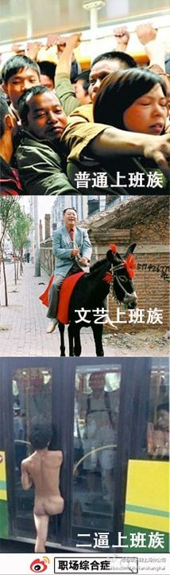

<!DOCTYPE html>
<html xmlns="http://www.w3.org/1999/xhtml">
<head>
<meta http-equiv="Content-Type" content="text/html; charset=utf-8"/>
    <title></title>
    <style type="text/css">
        #tooltip
        {
            width:500px;
            height:600px;
            border:solid 1px red;
            position:absolute;
        }
    </style>
    <script type="text/javascript">
        window.onload = function () {
            var json = {
                //"1.jpg": { "name": "西施", "height": 170, "weight": 50 },
                "2.jpg": { "name": "苍老师", "height": 156, "weight": 60 },
                "4.jpg": { "name": "郭老师", "height": 160, "weight": 100 }
            }
            var div = document.getElementById("mv");
            //循环键值对不能使用for，因为没有length属性  遍历的是 键
            for (var key in json) {
                //动态生成小图片  
                var img = document.createElement("img");
                img.src = "images/" + key;
                img.setAttribute("width", 50);
                //img动态生成的时候默认把图片原始的高宽设置了。
                //移除 img标签的height属性
                img.removeAttribute("height");//去掉height比例，不然浏览器会自动设置
                img.style.marginLeft = "10px";
                //
                img.setAttribute("name", json[key].name);
                img.setAttribute("a1", json[key].height);
                img.setAttribute("weight", json[key].weight);
                //
                div.appendChild(img);

                //生成大图
                //注册小图的事件
                //鼠标放上创建详细层
                img.onmouseover = function () {
                    var div = document.createElement("div");
                    div.id = "tooltip";
                    div.style.top = event.clientY + "px";
                    div.style.left = event.clientX + "px";
                    //将详细层添加到body中
                    document.body.appendChild(div);

                    //在详细层里创建img
                    var img = document.createElement("img");
                    img.src = this.src;
                    img.setAttribute("width", 400);
                    //img动态生成的时候默认把图片原始的高宽设置了。
                    //移除 img标签的height属性
                    img.removeAttribute("height");
                    div.appendChild(img);

                    //在img里面创建p标签 显示文本
                    var p = document.createElement("p");
                    p.innerHTML = "姓名：" + this.getAttribute("name") + "<br/>";
                    p.innerHTML += "身高:" + this.getAttribute("a1") + "<br />";
                    p.innerHTML += "体重:" + this.getAttribute("weight") + "<br />";
                    div.appendChild(p);
                }
                //鼠标离开时，去掉层
                img.onmouseout = function () {
                    var div = document.getElementById("tooltip");
                    if (div) {
                        document.body.removeChild(div);
                    }
                }


            };
        }
    </script>
</head>
<body>
    <!-- 
         
        设置成行内width属性，高宽会自动调整
        
        -->
    <div id="mv">

    </div>
</body>
</html>
